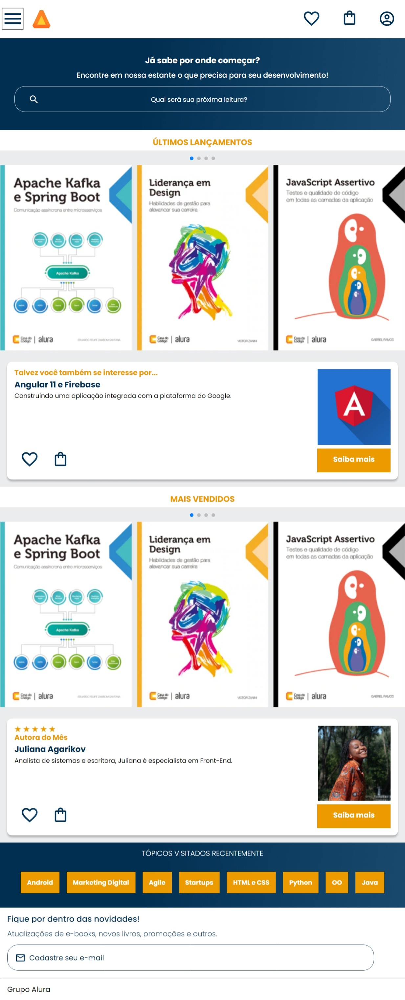
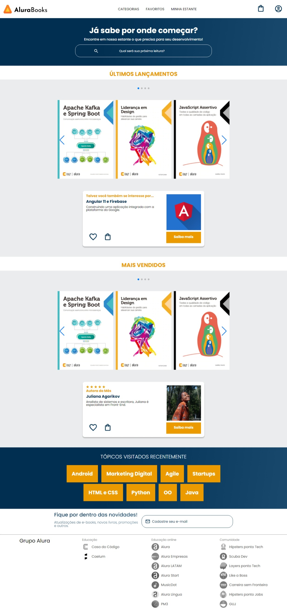
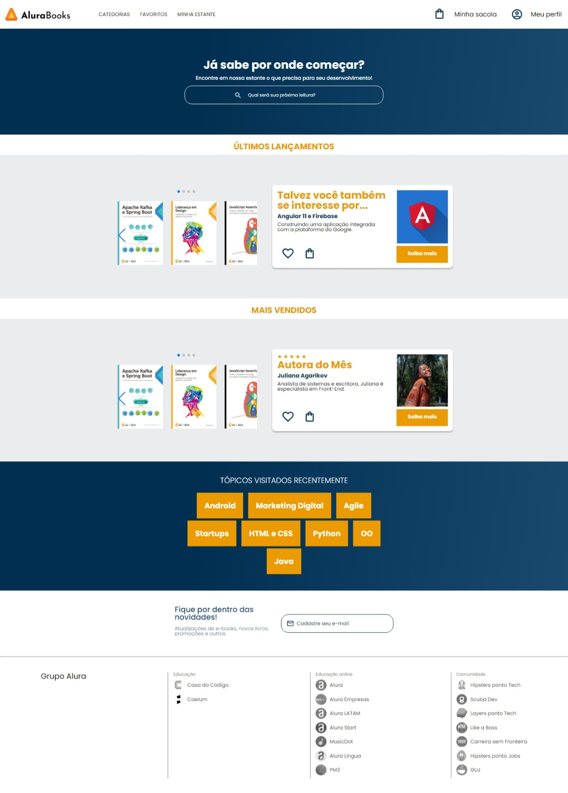
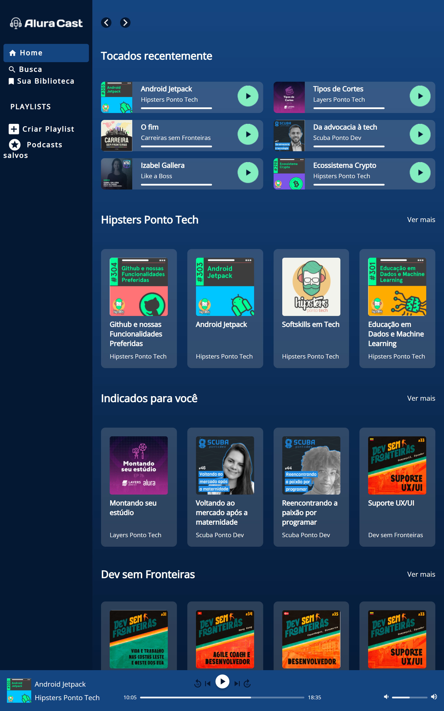
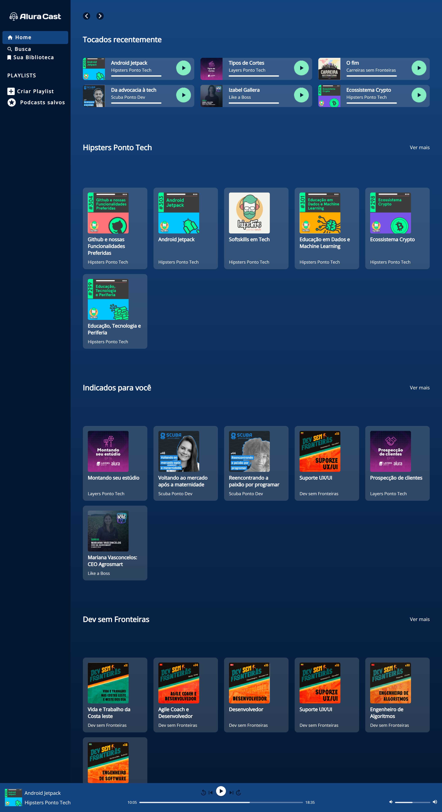
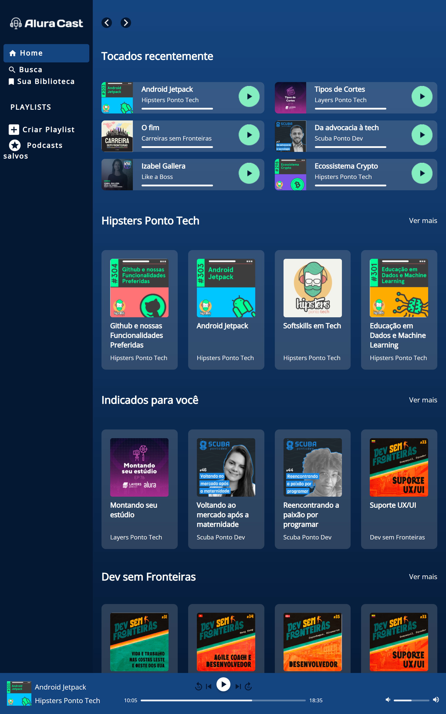
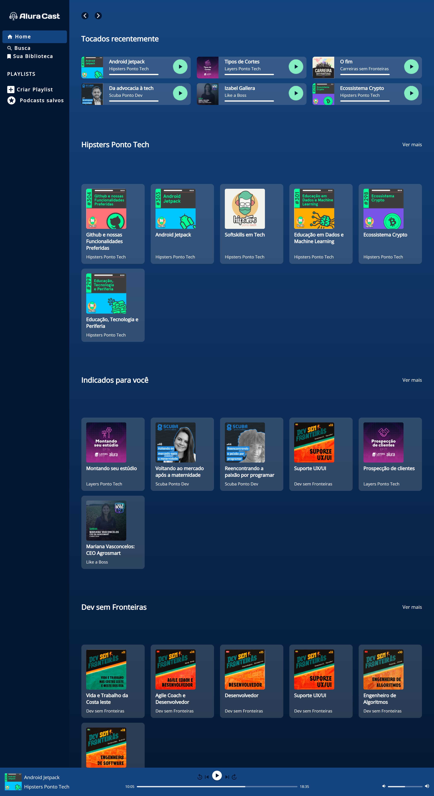

-

Combo + Alura
Site desenvolvido no curso HTML e CSS: praticando HTML/CSS da Alura, para o assinatura do Combo + da Alura. -

Alura Books
Site desenvolvido no curso HTML e CSS: responsividade com mobile-first da Alura, pensado com a metodologia mobile-first, esse site foi feito para telas mobile e adaptado para desktop. -


Alura Dev
Site desenvolvido para o Alura Challenge Front End 1ª Edição. Desenvolvido com HTML & CSS, esse site está em construção. -
 

Alura Cast
Site desenvolvido no curso CSS: construindo layouts com Grid da Alura, pensado com a metodologia mobile-first, essa plataforma de streaming para podcasts foi feita para telas mobile e adaptado para desktop, usando o método de display Grid. -


Alura Play
Site desenvolvido no curso CSS: Flexbox e layouts responsivos da Alura, pensado com a metodologia mobile-first, esse site de plataforma de vídeos foi feito para telas mobile e adaptado para desktop.